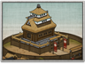

Requires
- Buildings: 
- Arts:

- Resources:
Spawned Garrisons
- Units:


Basic Building Statistics (can be modified by difficulty level, arts, skills, traits and retainers)
- Cost: 5500
- +1 to repression in this province
- Unlocks an additional construction slot
- Consumes food: 4
- Fortified defences (Castle)
Description
To look out from a tall tower is mastery.
A castle is a sign of absolute ownership, stamped onto the landscape like a family seal, documenting power. It is a strong defence against enemy incursions, and a centre for administration within a province. With such an impressive structure looming over their homes, people feel secure, but they also understand that they must keep to their allotted stations in life. It also allows the province to develop further with new building. A castle was not only a military fixture in the life of a noble family, even though it was cunningly designed to make it as difficult to take as possible. It was also a celebration of their status and wealth. The effort of building and maintaining even one castle was almost crippling, so it became public statement of confidence, power and good taste. Beautiful craftsmanship and luxurious details made life in a castle anything but austere for the nobles. Such quiet ostentation also served to ram home the point that the owners were not to be trifled with, or ignored.